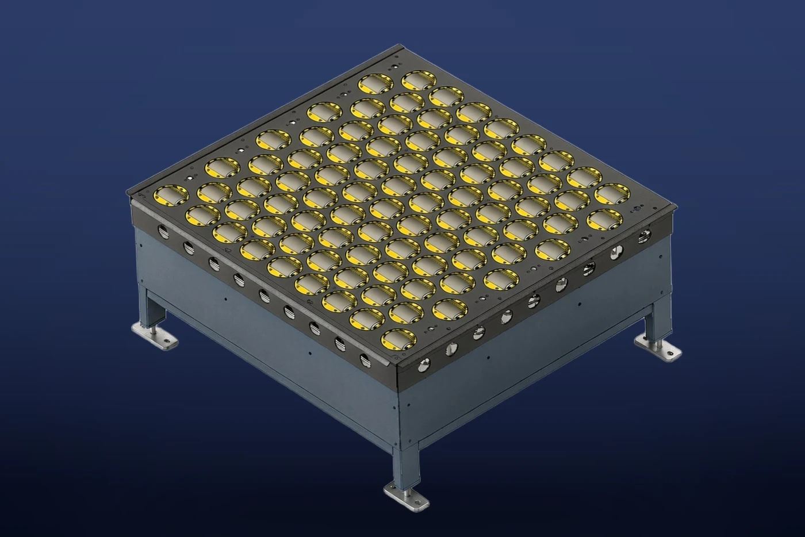

駆動ローラの向きを制御し、直進搬送、左右分岐、斜め方向への仕分けを行います。袋物、軟包装品、段ボール箱などに対応します。
掲載値は、自社工場の2026年10月版製品資料に基づきます。実際の処理能力は、荷物の寸法・重量、投入条件、仕分け先数、ライン構成により異なります。
この製品の導入について相談する製品一覧へ戻る →製品の特長
既存ラインとの接続
単独ユニットとしての設置に加え、既存搬送ラインへの組込みにも対応します。
主要仕様・選定条件
| 仕分け能力 | 7,200個/時間 |
|---|---|
| 最大走行速度 | 2.5 m/s |
| 騒音レベル | 72 dB以下 |
掲載値は、自社工場の2026年10月版製品資料に基づきます。実際の処理能力は、荷物の寸法・重量、投入条件、仕分け先数、ライン構成により異なります。
導入検討時の確認事項
対象荷物の最小・最大寸法および重量、必要処理能力、仕分け先数、設置スペース、電源仕様、使用温度範囲、既存設備との接続条件をお知らせください。保守範囲と据付・試運転工程についても、案件ごとに確認します。
仕様・お見積りについて相談する